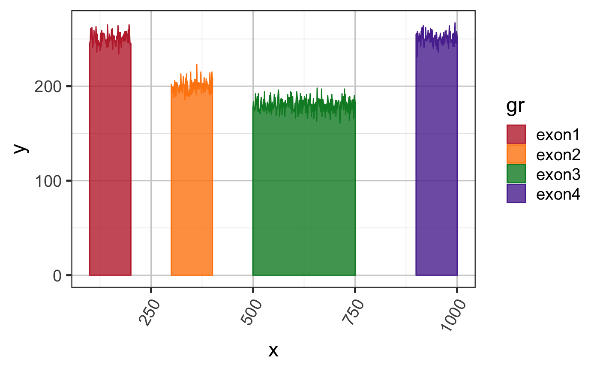

Convert exon coverage to polygons
exoncov2polygon( gr, covNames = NULL, sample_id = NULL, baseline = NULL, gapWidth = 250, doPlot = FALSE, coord_style = c("fortify", "base", "list", "all"), ref2c = NULL, compress_introns = TRUE, verbose = FALSE, ... )
| gr | GRanges where |
|---|---|
| covNames | character vector contained in |
| baseline | numeric vector of length 0, 1 or |
| gapWidth | numeric value sent to |
| coord_style | character value to define the output style:
|
| ref2c | optional list containing output from |
| compress_introns | logical indicating whether to compress
the coverage polygon coordinates to approximately the same
number of pixels per inch as the exon polygons. This option
greatly reduces the size of the polygon, since introns are
already about 50 to 100 times wider than exons, and when
|
| verbose | logical indicating whether to print verbose output. |
| ... | additional arguments are ignored. |
This function is a workhorse function that converts a GRanges object containing column values with NumericList coverage data, into a full data.frame sufficient to define ggplot2 and other coverage polygon plots.
An interesting argument is baseline which allows each exon
in the gr GRanges object to be offset from zero, in order to
make certain features visually easier to distinguish.
This function also calls simplifyXY() which reduces the
stored polygon detail for regions whose coordinates are compressed
on the x-axis, taking roughly the max value for each point.
The default output is roughly similar to broom::tidy() in
that it converts a custom R object into a tidy data.frame
suitable for use by ggplot2 and other tidy workflows.
The function getGRcoverageFromBw() takes a set of bigWig files
and returns a GRanges object whose columns contain NumericList data,
which is the intended input for exoncov2polygon().
test_cov_wide_gr() for examples
Other jam GRanges functions:
addGRLgaps(),
addGRgaps(),
annotateGRLfromGRL(),
annotateGRfromGR(),
assignGRLexonNames(),
closestExonToJunctions(),
combineGRcoverage(),
findOverlapsGRL(),
flattenExonsBy(),
getFirstStrandedFromGRL(),
getGRLgaps(),
getGRcoverageFromBw(),
getGRgaps(),
grl2df(),
jam_isDisjoint(),
make_ref2compressed(),
sortGRL(),
spliceGR2junctionDF(),
stackJunctions()
Other jam RNA-seq functions:
assignGRLexonNames(),
closestExonToJunctions(),
combineGRcoverage(),
defineDetectedTx(),
detectedTxInfo(),
flattenExonsBy(),
getGRcoverageFromBw(),
groups2contrasts(),
internal_junc_score(),
makeTx2geneFromGtf(),
make_ref2compressed(),
prepareSashimi(),
runDiffSplice(),
sortSamples(),
spliceGR2junctionDF()
Other splicejam core functions:
gene2gg(),
grl2df(),
make_ref2compressed(),
plotSashimi(),
prepareSashimi()
# use some test data suppressPackageStartupMessages(library(GenomicRanges)); suppressPackageStartupMessages(library(ggplot2));#> Warning: package ‘ggplot2’ was built under R version 3.6.2data(test_cov_gr); # prepare polygon coordinates exondf <- exoncov2polygon(test_cov_gr, covNames="sample_A"); # create a ggplot gg3 <- ggplot(exondf, aes(x=x, y=y, group=gr, fill=gr, color=gr)) + ggforce::geom_shape(alpha=0.8) + colorjam::theme_jam() + colorjam::scale_fill_jam() + colorjam::scale_color_jam(); print(gg3);